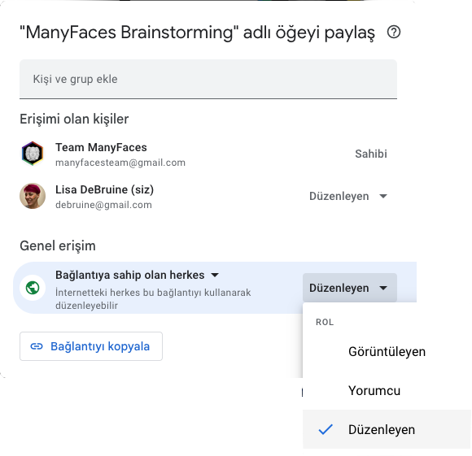
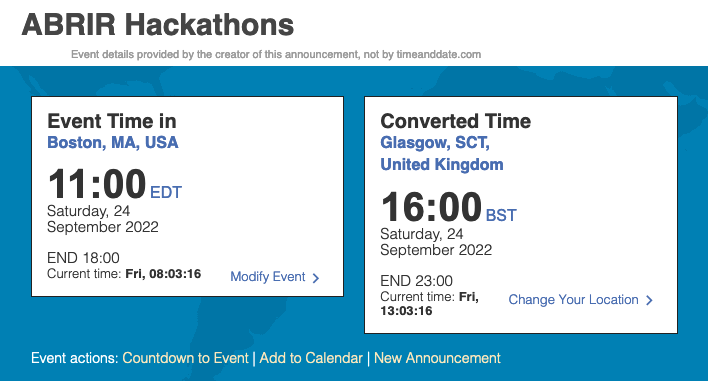

14 İş birliği için Araçlar
Bir büyük ekip bilim grubu genellikle kayıt planları, veri setleri, analiz kodu ve yayımlanmak üzere gönderilen belgeler gibi bilimsel ürünler üretir. Tüm bunları takip edebilmek ve düzenlemek için bir yola ihtiyacınız olacaktır. Aşağıda ekipleriniz için hesaplar oluşturabileceğiniz favori araçlarımdan birkaçı bulunmaktadır.
Grup için özel bir e-posta adresi oluşturmak ve kullanmak iyi bir fikir olabilir, böylelikle diğer tüm hesaplarınıza giriş yaparken bu e-posta adresini kullanabilirsiniz. Bu hesaplar liderlik ekibi değiştiğinde kolayca transfer edilebilirler.
14.1 Google
Google docs, Google sheets, ve Google forms web siteleri büyük bir grupla dokümanlar üzerinde ortak çalışma yapmanın kullanışlı bir yoludur. Çoğu kişi erişimle ilgili herhangi bir sorun yaşamaksızın bu web sitelerini kullanabilirler.
Eğer temel grubunuzdan biri Google Shared Drive dosyası oluşturabilen bir üniversitede çalışıyorsa bu yöntem de dosyaları organize etmek için iyi bir yoldur. Üyeler Shared Drive’a eklenebilir ve tüm üyelerin düzenleme erişimine sahip olduğu dokümanlar oluşturabilir.
Eğer Shared Drive dosyası oluşturulamazsa, grup için yeni bir Google hesabı oluşturulabilirsiniz. Böylelikle, tüm dokümanlar açılan hesabın Google Drive’ında bulunan bir dosyada saklanabilir. Ekip üyeleri tarafından yapılan belgelerin grup hesabına editör izinleri vermesi gerekmektedir. Belgeler herkes tarafından düzenlenmesi, yorumlanması veya görüntülenmesi için açık hale getirilebilir veya belgelerin erişimini yalnızca belirli kişilerle sınırlandırabilirsiniz.

14.2 Calendar
Grubunuz büyüdükçe toplantıları ve son teslim tarihlerini takip etmeniz gerekmektedir. Grubun kullanacağı Calendar hesabı bu konuda yardımcı olabilir. Google Calendar uygulaması özellikle de ekip için zaten bir Google hesabı oluşturduysanız, kurulumu muhtemelen en kolay olan uygulamadır.
Buna ek olarak, muhtemelen birkaç saat diliminde toplantı saatleri düzenlemeniz gerekecektir. When2Meet gibi birden çok saat dilimini destekleyen web sitelerin bağlantılarını ekleyebilirsiniz. Böylelikle grubun kullandığı bir takvime toplantı eklemek, öğleden sonra 3’teki toplantının gerçekte hangi saat diliminde gerçekleşeceği konusundaki kafa karışıklığının önlenmesine yardımcı olur.
Event Time Announcer uygulamasını belli bir zaman diliminde bir etkinliği duyurmak için kullanabilirsiniz. Bir form doldurduktan sonra web sitenin verdiği URL ile etkinlik saatinin formatını aşağıdaki format gibi paylaşabilirsiniz:

14.3 OSF
Open Science Framework sitesi ortak çalışmanızı bitirdikten sonra belgelerinizi ve diğer malzemeleri arşivlemek için harika bir yerdir. Projeler modüler bir yapıya sahiptir, böylece belirli projeler veya projelerin belli bölümleri için farklı ekip üyelerine düzenleme hakları verebilirsiniz.
Ekibiniz için bir proje oluşturabilirsiniz (Ekibinizin Avrupalı üyeleri varsa depolama konumunu Almanya olarak ayarlamanız tavsiye edilir, böylece araştırma verileriniz Genel Veri Koruma Yönetmeliği- GDPR sorunları olmadan depolanabilir. Her proje için yeni bir bileşen oluşturabilir ve katkıda bulunanları ekleyebilirsiniz.
14.4 Zotero
Zotero uygulaması muhtemelen en iyi ve en açık referans yöneticisidir. Grubunuz için üyelerin katılabileceği paylaşılan bir kitaplık oluşturabilirsiniz. Bunu, grubunuzun çıktılarını izlemenin bir yolu olarak veya projeler için paylaşılan bir referans yöneticisi olarak kullanabilirsiniz. Kütüphaneyi tamamen özel veya herkesin görebileceği şekilde ayarlayabilirsiniz.
14.5 Github
Grubunuzun analiz komut dosyaları dahil herhangi bir açık kodu olacaksa, ücretsiz bir GitHub Organisation hesabı kurabilirsiniz. Code Check Club, grup GitHub sayfasına iyi bir örnektir.
GitHub ayrıca kuruluşunuz ve projelerinizin web siteleri için mükemmel bir sunucudur. (Daha fazla detay için: Section 15.4.1)
14.6 Zenodo
Zenodo kodlama projelerine DOI vermek için harika bir araştırma deposudur (GitHub entegrasyonuna sahiptir). Biz PsyTeachR olarak kitap serisi için Zenodo’yu kullanıyoruz. Kuruluşunuzun çıktılarını düzenlemek için Zenodo’da bir Topluluk oluşturabilirsiniz.